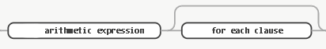
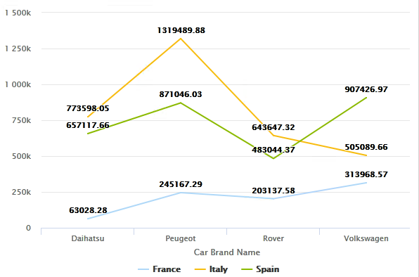
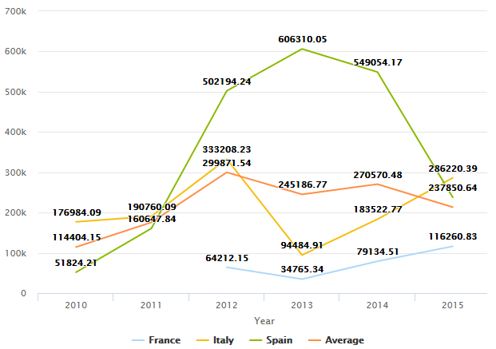

Query Object: for each clause
The For each clause in a Query object allows splitting a data element into more than one by using one axis to perform the separation. In other words, it allows displaying the Query's result separated by the differents values, if you want it is similar to a SQL group by operation. The syntax is composed of the following elements:  which in short translates to: <Expression1> for each <Expression2> where:
Usage exampleThere are many scenarios where this clause can be applied, so let's focus in two of them, a simple case and a more complex one. Let's suppose a Car Dealer reality. Simple caseIn this case, we will focus on each Car Brand's total sales. We want to show the differents values separated by country; to do so, we define the following Query structure: # Attributes Sum(InvoiceTotal) for each CountryName CarBrandName After the Query's execution, the following values are displayed:  Notice that this type of syntax is also useful when:
Complex caseIn this case, we want to compare the total sale's average with each Car Brand's total over time and separated by countries. So, the following structure is defined: # Attributes Sum(InvoiceTotal) for each CountryName Average(InvoiceTotal) by CountryName Year(InvoiceDate) The result is as follows:  See alsoAvailabilityThis behavior is available since GeneXus 16 Upgrade 11. |


| Backlinks | |
| Query Object Compatibility | Query object expressions |
| Toc:Reporting in GeneXus |